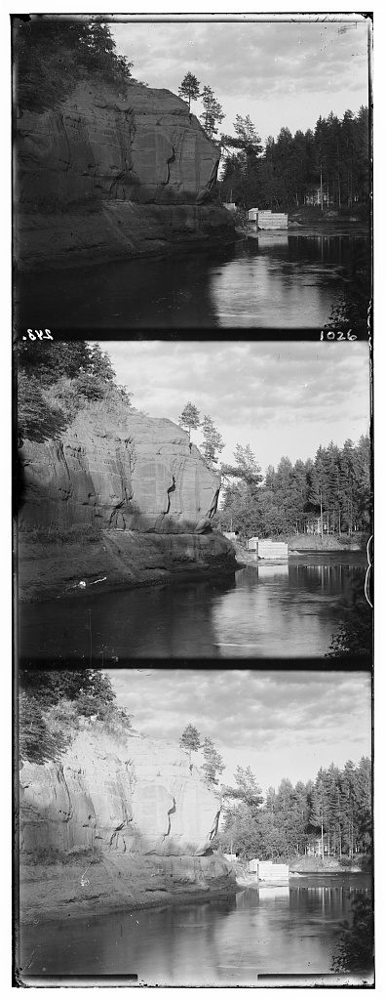
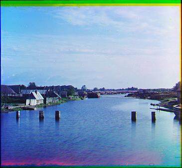
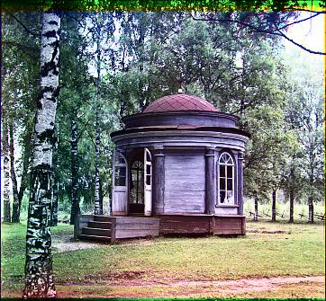

Raymond Lo (1155009121)
As early as 1907, Sergei Mikhailovich Prokudin-Gorskii (1863-1944) envisioned that color photography was the trend of the future. He travelled across the vast Russian Empire and took thousands of color photographs of everything he saw: people, buildings, landscapes, railroads, bridges, etc... His idea was simple: record three exposures of every scene onto a glass plate using a red, a green, and a blue filter. His RGB glass plate negatives, capturing the last years of the Russian Empire, were purchased in 1948 by the Library of Congress. The LoC has recently digitized the negatives and made them available on-line. (Source: Assignment Specification)
In this assignment, we attempt to extract the three color channels from the digitized negatives and align them correctly to give the original color image.
Step 1: Extract the three channels from the original image, cropping away the margins
Step 2: Align two channels and measure the fitness of the alignment with a given metric. Search for the displacement vector for the first channel that maximizes the fitness. For high resolution images, shrink the image first and obtain coarse alignment, and then fine tune the alignment.
Step 3: Build the color image from the aligned channels. Perform any further enhancements if necessary.
The images used as example were from: http://www.loc.gov/pictures/search/?q=Prokudin+negative
Image IDs:
The digitized negatives consist of the three channels arranged vertically in B,G,R order.
| Digitized Negative 00978 |
Since the plates for different channels should have the same size, the easiest way of extraction is to simply disect the image into three equal parts.
However, the border surrounding the image remains in the extracted channels, which is undesirable.
We would like an algorithm to automatically detect the borders and crop them off, giving a clean extraction of channels.
We notice a sharp contrast between the color of the image and the border. If we add up the color intensity of every row, we can see jumps around the borders.
To separate the jumps, we apply a filter on the series: [1,4,5,0,-5,-4,-1]/32
This filter is obtained by applying difference operator on the 1D gaussian filter [1,5,10,10,5,1]/32
After filtering (and taking absolute values), we can clearly see where the borders are located.
Mathematically,
the peaks are local maximums that exceed certain criteria (e.g. 95-percentile).
| Sum of color intensity by row | After filtering |
Similarly, by applying the same operation on columns, we can remove all borders surrounding the image and extract the color channels correctly.
| Equal partition | Auto cropping |
To quantify how well-aligned two channels are, we calculate the sum of square difference. For each pixel, the difference in intensity of the two channels is squared and then added up. This is one of the most basic metrics, and it is very easy to implement.
However, its major limitation is that even for perfectly aligned images, the SSD may still be significant since intensities for different channels can be very different.
For example, if part of the image is totally green, there is high intensity for the green channel but low intensity for the other channels.
To overcome the limitation of SSD, instead of focusing on the color intensities, we compare the edges in an image.
Edges of an image are common to all color channels. Also, they have specific shapes and they are independent of color intensities.
Therefore, SSD is suitable for measuring alignment of edge images.
There are a number of ways to detect edges. One of the simplest and effective ways is the Sobel Operator.
The Sobel Operator is basically a combination of smoothing and difference operator.
Horizontal Sobel Operator: [-1,0,1;-2,0,2;-1,0,1]; Vertical Sobel Operator: [-1,-2,-1;0,0,0;1,2,1];
After convolution with the Sobel Operators, the resultant value resembles (the x and y components of) the
gradient at each pixel.
Then, the norm of such "gradient" is calculated and normalized.
Filtering is then applied to remove the "noise", and an edge image is obtained.
| Sobel operator, no filter | Sobel Operator, filtered |
The matlab function AlignSingle computes the optimal displacement vector of an image over another, such that the two are best aligned.
The function takes five inputs: img (image to be shifted), B (base image), x_shift (initial x-displacement), y_shift (initial y-displacement) and range (displacements ranging from [-range,-range] to [range,range] is tested).
It gives two outputs: v (the optimal displacement vector) and m (minimal value of the metric).
For the computation, the target image is shifted by [x_shift+dx,y_shift+dy], where dx,dy are between -range and range.
The metric is computed on the central region of the target image, so as to avoid distortion by the area near the edges of the images.
In the implementation, the first 1/6 and last 1/6 of each dimension of the image are excluded from the metric computation.
Different combinations of (dx,dy) are tested, and whenever the metric obtained is less than the minimum so far, the displacement vector is updated.
| Digitized Negative | Aligned Image | Remarks |
|  | There are a number of clear edges in the picture, which can be captured by the Sobel Operator. Hence, the alignment is very good. | |
| Even though there are not many recognizable edges in this picture, the alignment is still quite good. | ||
| Despite part of the digitized negative is missing, the image is still aligned perfectly. |
Other aligned images
|  | ||
The time taken for aligning each of these images is less than 4 seconds.
For high resolution images, metric computation becomes significantly heavy. Worse still, the range for the search of optimal displacement vector also increases with resolution.
In order to reduce computation workload and save processing time, we implement a coarse-to-fine search strategy using an image pyramid.
The original image is repeatedly scaled down by a factor of 2. This is done by first applying a Gaussian filter to the image, and then subsampling from it.
The coarsest images are aligned first to obtain the optimal displacement vector. Then, we align the images one scale above with displacement that is double of the previous displacement vector. A local search is done to refine the displacement vector.
By repeating the process above, we obtain the final displacement vector of the original images.
Each color channel of the high resolution images are roughly 3,000 pixels in each dimension.
With a 5-level pyramid, the size of the coarsest image in the pyramid is roughly 200 pixels.
We search for the vector in the coarsest image with range 15 pixels, sufficient for images of such size.
Then, moving down the pyramid, the local search is performed with range 2 pixels.
| Digitized Negative | Aligned Image | Remarks |
| The picture contains a lot of fine details, and the algorithm did an excellent job | |
| Even though there are not many recognizable edges in this picture, the alignment is still quite good. | ||
| Despite part of the digitized negative is missing, the image is still aligned perfectly. |
Other aligned images
 |
The time taken for aligning each of these images is 12 to 26 seconds, which is quite impressive considering the size of the images.
Due to limitations of exposure at the time these photos were taken, some of the images are too bright, while some are too dim.
In order to enhance the quality of the image, we try to increase the contrast of the image.
A common technique in contrast adjustment is Histogram Equalization, which rescales pixel intensities such that a uniform histogram is obtained when the intensities are grouped into intervals and counted.
While equalization can be preformed separately on each of the color channel, this may disturb the color balance of the image. The resultant image may look unrealistic due to alternation in hue and saturation.
Therefore, the RGB image is first converted into the CIE LAB color space. The Luminance channel is selected and equalized. After that, the image is converted back to RGB.
Such an implementation ensures that hue and saturation of the image remains unchanged, only brightness is adjusted.

1. https://en.wikipedia.org/wiki/Histogram_equalization
2. https://en.wikipedia.org/wiki/Lab_color_space